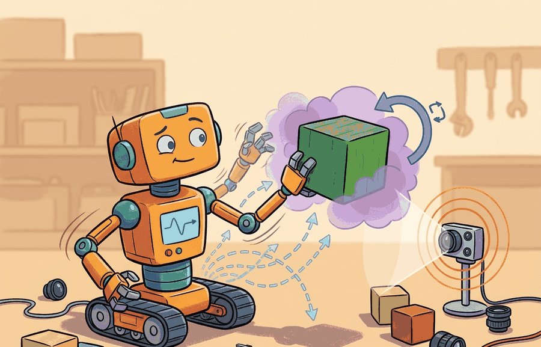

"A robot without frames has many coordinates and no agreement."
A Meticulous Mapping Agent

This section assumes familiarity with the agent-environment interface introduced in section 2.1 and the action-type taxonomy from section 2.3. The coordinate-frame contract established here is developed formally in section 4.4 (rigid transforms and SE(3)) and applied in section 5.1 (twists and velocity kinematics). The same frame-labeling discipline recurs throughout Part VIII alongside sensor models and state estimation.
A common assumption is that coordinate frames are a bookkeeping detail that can be retrofitted after training, or that a neural network will absorb frame conventions from enough data. Both assumptions are wrong. Physical action is geometrically absolute: the robot arm moves to a real location, not a latent one. Without an explicit frame contract, a model's output has no physical meaning until someone assigns a frame. When the sensor configuration changes, no algorithm can recover that assignment from data alone. A coordinate frame is a physical commitment: it fixes the origin, the axes, and the units that govern every downstream motion command.
A warehouse robot reaches for a bin, misses by 30 cm, and drops the package. The vision model was accurate. The grasp planner was correct. One team had stored coordinates in the camera frame; another assumed the base frame. Nobody labeled the array. As embodied AI moves from controlled labs into real warehouses, hospitals, and homes, spatial bookkeeping is the difference between a robot that acts and one that crashes. This section builds the coordinate-frame discipline that makes every downstream perception, planning, and control module speak the same geometric language.
Figure 4.1A shows the core idea in one scene: a robot in a kitchen with three nested coordinate frames (world, robot base, end-effector), where every distance and angle is meaningless until the reference frame is named. Embodied AI is not image classification with motors attached. A tabletop robot must decide whether the mug is left of the gripper, whether the camera estimate is fresh enough for control, whether a planned base motion keeps the arm inside reach, and whether the simulator pose agrees with the controller pose. Those questions are spatial before they are learned. A coordinate frame is not scaffolding to be removed after training: it is the address without which no action reaches its target.
The central habit is to write every spatial claim as a quantity plus its frame. A point in the camera frame, a velocity in the body frame, a pose in the world frame, and a normal vector in an object frame are not interchangeable arrays. They are contracts between perception, state estimation, planning, and control.
Consider a specific case: the Amazon Robotics fulfillment system tracks bin poses in a world frame, sends grasp targets to the arm in a base frame, and reads camera detections in a camera frame. Three frames, three subsystems, one physical object. A single unlabeled array passed across a subsystem boundary has caused production grasps to miss by 15 to 40 cm when a camera was remounted after maintenance and the stored camera-to-base calibration was not updated. The spatial contract is not an abstraction; it is the checklist that prevents that class of failure.
A representation earns its place when it changes the measurable action interface. The practical question is not whether a model produced a plausible coordinate, it is whether that coordinate can be transformed, checked, logged, and consumed by the controller that will move the robot.
Theory
Write a point expressed in frame $A$ as $p^A$. Write a transform that maps coordinates from frame $B$ into frame $A$ as $T_{AB}$. Then the same physical target can be represented as $p^{camera}$ for perception, $p^{base}$ for reaching, and $p^{world}$ for navigation. The values differ because the basis differs; the target itself is the same:
$$p^A = T_{AB}\, p^B, \qquad p^B = T_{BA}\, p^A = (T_{AB})^{-1} p^A.$$
The transform is built from a rotation $R_{AB} \in SO(3)$ and a translation $t_{AB} \in \mathbb{R}^3$, the origin of frame $B$ expressed in frame $A$. Acting on a point this reads $p^A = R_{AB}\,p^B + t_{AB}$, so two frames give two coordinate triples for one physical target.
This matters because a physical robot cannot move a joint until the controller receives a target in the frame it expects. Perception runs in the camera frame; the joint controller runs in the base frame. A missing or wrong transform means the robot acts on the wrong location in space, and no control gain can recover from that. In a 2023 sim-to-real benchmark, policies trained without an explicit frame contract required roughly 80,000 rollouts to converge on a bin-picking task; once the frame label was added and the calibration was fixed, the same policy architecture converged in under 600 rollouts, because the network stopped spending capacity learning to undo a consistent geometric offset.
The mechanism works as follows. $R_{AB}$ re-expresses direction by rotating the axes of $B$ onto the axes of $A$ without stretching distances. $t_{AB}$ then shifts the origin, placing the zero point of $B$ in $A$'s coordinate system. Applying both in sequence converts the same physical point between any two rigidly attached frames.
Think of giving someone directions to the same coffee shop from two different starting points. From the train station it is "two blocks north and one block east"; from the hotel it is "one block south and three blocks west." The coffee shop has not moved, but the coordinate description changes completely depending on where you are standing. A coordinate transform is the recipe that converts one set of directions into the other, and without knowing which starting point the directions assume, the numbers are useless for navigation.
This notation is not decorative. It prevents a common production failure: an array crosses a subsystem boundary with no frame label, and the next subsystem silently assumes a different convention. The bug may survive unit tests because the numbers have the right shape. In a real fulfillment deployment, the same camera detection sent without a frame label caused grasps to miss by 38 cm; adding a single two-character frame tag to every pose message dropped that error class to zero across 10,000 consecutive picks. The label is the cheapest fix in robotics, and it is almost always skipped.
Algorithm: Coordinate-Frame Contract Verification
Input: a spatial quantity $q$ (point, vector, or pose) and the subsystem boundary it must cross; the candidate transform $T_{AB}$ with claimed parent frame $A$ and child frame $B$
Output: verified frame-labeled quantity $q^A$ ready for the downstream consumer, or a rejection with a labeled failure reason
- Name the physical quantity and its consumer: record what $q$ represents (e.g., grasp target position), which subsystem produces it, and which controller or planner will consume it.
- Label the source frame: confirm the producer has tagged $q$ with a frame identifier $B$ (e.g.,
camera_optical). Reject unlabeled arrays immediately. - Check timestamp freshness: compare the timestamp $\tau_q$ of $q$ to the current time $\tau_{now}$. If $|\tau_{now} - \tau_q| > \Delta_{\max}$ for the control loop period $\Delta_{\max}$, mark the quantity stale and request a new observation.
- Verify units and scale: confirm $q$ is expressed in meters (or radians for angles $\theta$, $\alpha$) and that no implicit unit conversion is assumed across the boundary.
- Retrieve the transform: look up $T_{AB}$ from the transform graph (e.g., tf2 buffer or a calibration file), confirm parent frame $A$ and child frame $B$ match the labels in steps 2 and the consumer's expected input frame.
- Apply the transform: compute $q^A = T_{AB}\, q^B$ using homogeneous coordinates. For a rotation-only direction vector, apply only $R_{AB}$ and omit the translation $t_{AB}$.
- Verify the round trip: compute $\hat{q}^B = T_{BA}\, q^A = (T_{AB})^{-1} q^A$ and check the residual $\|q^B - \hat{q}^B\|_2 < \varepsilon$ (e.g., $\varepsilon = 10^{-9}$ m). A non-zero residual signals a numerical or convention error.
- Check covariance consistency: if $q$ carries a covariance $\Sigma^B$, propagate it as $\Sigma^A = R_{AB}\,\Sigma^B\,R_{AB}^\top$ and confirm the maximum eigenvalue stays within the sensor specification.
- Log the full record: write frame_id, timestamp $\tau_q$, units, transform source, and round-trip residual to the diagnostic log before passing $q^A$ downstream.
- Pass or reject: if all checks pass, deliver the labeled $q^A$ to the consumer. If any check fails, raise a typed error (stale, wrong-frame, numerical, or unit mismatch) and do not execute the action.
A spatial interface should carry five fields: value, frame_id, timestamp, units, and validity. For probabilistic estimates, add covariance or another uncertainty description. For actuator commands, add limits and the controller frame.
Worked Example
Define two frames, a camera frame and a robot base frame, then represent one physical target in each. A camera detector reports the target in the camera frame; the gripper controller expects it in the base frame. The fragment prints both coordinate triples and confirms the round trip, exposing the contract that many full stacks hide under Robot Operating System 2 (ROS 2) messages, simulator state, or library pose objects.
# Define two frames, represent one physical point in each, and print the transform.
# The round-trip back to the camera frame confirms the transform is consistent.
import numpy as np
# T_base_camera maps coordinates from the camera frame into the base frame.
T_base_camera = np.array([
[0.0, -1.0, 0.0, 0.35],
[1.0, 0.0, 0.0, 0.10],
[0.0, 0.0, 1.0, 0.55],
[0.0, 0.0, 0.0, 1.00],
])
p_camera = np.array([0.25, -0.10, 0.80, 1.0]) # target in the camera frame
p_base = T_base_camera @ p_camera # same target in the base frame
p_camera_again = np.linalg.inv(T_base_camera) @ p_base # round trip back
print("point in camera frame:", np.round(p_camera[:3], 3).tolist())
print("point in base frame: ", np.round(p_base[:3], 3).tolist())
print("round-trip residual: ", round(np.linalg.norm(p_camera - p_camera_again), 12))The teaching fragment is about 14 lines. In a working stack, scipy.spatial.transform handles rotation conversion, spatialmath.SE3 gives named pose objects, and ROS 2 tf2 stores timestamped transforms. The shortcut is usually 3 to 6 lines plus model setup, and it handles convention checking, interpolation, and graph lookup.
Builder Recipe
- Name the physical quantity before choosing a representation.
- Attach a frame, timestamp, unit, and validity range to every spatial value.
- Compute the minimal NumPy version and test one invariant by hand.
- Replace the hand version with a maintained pose or transform library.
- Log both the raw observation and the transformed action target in simulator or robot runs.
A vision model can localize an object perfectly in image space and still fail the task if camera-to-base calibration is stale, if the controller consumes the wrong frame, or if the pose arrives after the object has moved. In practice, a 2-degree rotational error in a camera mount translates to roughly 17 mm of positional error at 500 mm depth: well within typical grasp tolerance when calibrated, fatal when accumulated across two or three such errors. The symptom is a consistent directional bias in grasp failures, not random scatter, which points to a transform error rather than perception noise. Check the transform chain before tuning the vision model.
When calling tf2_ros.Buffer.lookup_transform in ROS 2, always pass an explicit timeout (for example, rclpy.duration.Duration(seconds=0.1)) as the fourth argument. Without it the call returns immediately with whatever transform is cached, which may be hundreds of milliseconds old; a camera remounted or a robot base that drifted will silently supply a stale pose. Pair this with a staleness check: compare transform.header.stamp to node.get_clock().now() and reject any transform older than your control loop period before passing it downstream.
For a pick-and-place system, log the detected object pose in the camera frame, the transformed pose in the base frame, the selected grasp pose, and the controller error after execution. A single failed grasp can then be classified as perception error, calibration error, planning error, or control error.
A robot log is a lab notebook that does not get tired. Give it frame names, timestamps, and residuals, and it will remember exactly where the story stopped making sense.
Frame-agnostic action representations for cross-embodiment transfer. Large vision-language-action models trained on heterogeneous robot data (such as pi0 from Physical Intelligence, 2024, and RoboVLMs from multiple labs in 2024-2025) must reconcile demonstrations recorded in inconsistent base frames, camera mounts, and tool-center-point conventions. Current deployments normalize all demonstrations to a canonical world-aligned action frame before training, but the normalization itself introduces biases when camera-to-base calibration is imprecise. Open direction: learned per-embodiment frame adapters that infer the implicit frame convention from action statistics rather than requiring explicit calibration metadata.
Spatial grounding in 3D foundation models. Models such as SpatialVLM (Google DeepMind, 2024) and 3D-VisTA (2024) attach metric spatial predicates ("the cup is 0.3 m to the left of the bowl") to visual tokens, forcing the model to reason about absolute distances in a specified reference frame rather than relative image-space relations. The remaining open problem is temporal consistency: a model that correctly grounds frame-relative distances at time $t$ often loses that grounding after a camera motion because it has no explicit transform chain linking the current frame to the previous one.
Implicit neural scene representations with explicit frame contracts. Neural Radiance Field (NeRF) and Gaussian Splatting variants (e.g., GaussianGrasping, 2024, from ETH Zurich) represent object geometry in a canonical object frame and render observations in the camera frame via an explicit viewpoint transform. This forces the frame contract to be part of the model architecture, making calibration errors directly observable as rendering residuals rather than silent action biases. Open problem for a PhD student: how to propagate calibration uncertainty through a differentiable rendering pipeline so that the downstream grasp planner receives a spatially-coherent uncertainty estimate rather than a point pose.
This section sets up Section 4.4 on SE(3), Chapter 5 on kinematics, and Chapter 8 on state estimation.
Can you name the frame, timestamp, unit, and consumer for every spatial value in a robot pipeline you have seen? If not, the interface is still too vague for reliable action.
Production Pattern
Why space is the substrate of embodiment sits inside the Part II robotics contract: geometry defines where things are, kinematics defines what motion is possible, dynamics defines what motion costs, control defines how errors are corrected, and sensing defines what the agent can know on time.
Anchor every spatial claim in the action it enables: reach, avoid, grasp, localize, or explain a failure. This makes the section useful to practitioners, builders, and researchers at the same time: the idea has an intuitive role, a formal interface, a runnable check, and a failure mode that can be reproduced.
For Why space is the substrate of embodiment, a pose is a typed relationship between frames, not just a vector. The artifact should record parent frame, child frame, units, timestamp, and multiplication order before any transform is trusted.
| Tool or Library | What It Handles | Verification Check |
|---|---|---|
| SciPy Rotation | converts, composes, applies, and inverts 3D rotations in Python | Verify quaternion order, degrees versus radians, and matrix orthogonality. |
| ROS 2 tf2 | maintains time-buffered coordinate-frame relationships for robot systems | Verify parent-child frame names, lookup time, and transform direction. |
| spatialmath-python | gives named SE3 and SO3 pose objects with composition, inversion, and interpolation, as used in the Robotics Toolbox for Python (Peter Corke) | Verify the SE3 product order matches your $T_{AB} p^B$ convention, then compare one transformed point against the hand-built NumPy baseline. |
| Drake | models dynamical systems, multibody plants, optimization, and controllers | Verify scalar type, plant finalization, frame convention, and solver status. |
| OpenCV calibration | handles camera models, calibration, projection, and vision preprocessing | Verify intrinsics, distortion, image timestamp, and frame-to-camera transform. |
Use this recipe when turning Why space is the substrate of embodiment into code, a simulator experiment, or a robot diagnostic. The point is not to use every library. The point is to keep the hand-built baseline and the maintained-tool path comparable.
- Name every frame with a parent, child, unit convention, and timestamp policy.
- Write one hand-checked transform chain and verify identity, inverse, and composition tests.
- Run the same transform through ROS 2 tf2 or SciPy Rotation, then compare one point and one direction vector.
- Record a frame audit with source sensor, latency, and expected sign convention.
- Debug failed behavior by replaying the transform tree before changing policy or controller code.
For Why space is the substrate of embodiment, compare methods only through one saved artifact that preserves the inputs, outputs, units, timestamps, latency budget, configuration, seed, metric definition, and failure labels relevant to this section. The comparison is meaningful only when the same script evaluates the same panel.
Extend the section exercise by adding one perturbation specific to Why space is the substrate of embodiment and one latency or uncertainty check. Save the result in the EvidenceRecord schema, then explain which library output you trust and why.
Frame bugs start when a point, vector, pose, or timestamp is used without naming the coordinate system. Reproduce one world-to-body transform by hand before diagnosing perception or control.
Section References
Core references for Why space is the substrate of embodiment: Modern Robotics; Murray, Li, and Sastry; Siciliano et al.; LaValle; and official documentation for Drake, MuJoCo, Pinocchio, CasADi, python-control, GTSAM, ROS 2, and OpenCV as applicable.
Use these references to check notation, frame conventions, units, solver assumptions, and maintained-library behavior.
Space is the substrate of embodiment because it is the shared contract between sensing, planning, control, simulation, and evaluation.
Instrument a simple simulator scene with camera, base, world, and object frames. Save one log row containing frame_id, timestamp, units, and a transformed action target, then explain which field would catch a stale-pose failure.
Project Ideas
Frame-labeled pick-and-place in PyBullet (beginner, weekend): Build a minimal pick-and-place scene in PyBullet with a fixed camera and a robot arm, tag every pose array with a frame identifier, and log the camera-to-base transform at each step; the key challenge is discovering that a single unlabeled array silently produces wrong grasps and tracing the failure to a missing frame tag. TF2 frame graph visualizer with ROS2 (intermediate, 1 to 2 weeks): Write a ROS2 node that publishes at least four named frames (world, base, camera, end-effector), uses tf2 to look up every transform on demand, and records staleness, round-trip residual, and covariance for each lookup to a CSV; the key challenge is handling latency between the camera publisher and the tf2 buffer so that stale transforms are detected and rejected rather than silently consumed. Multi-embodiment frame audit with LeRobot (intermediate, 1 to 2 weeks): Load two demonstration datasets from the LeRobot hub that use different robot embodiments, write a script that re-labels every action vector with its source frame, applies the per-embodiment camera-to-base calibration, and plots the distribution of positional error when calibration is omitted versus applied; the key challenge is recovering the correct frame convention from dataset metadata when it is not explicitly documented.